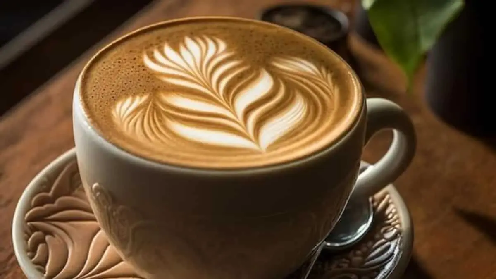
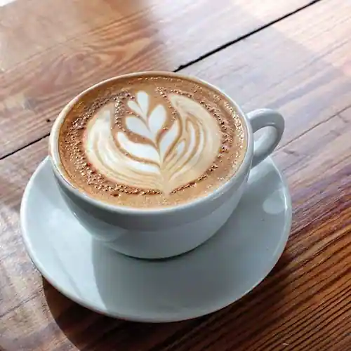

The Wonderful World of Coffee
From a legendary discovery to a global phenomenon.
Coffee is more than just a beverage; it's a culture, a science, and an art form. Enjoyed by millions every day, this aromatic drink is brewed from roasted coffee beans, the seeds of berries from certain flowering plants in the Coffea genus. It is one of the most popular drinks in the world and can be prepared and presented in a variety of ways.
A Legendary Discovery
The history of coffee dates back to the 9th century in the ancient coffee forests of the Ethiopian plateau. According to legend, a goat herder named Kaldi discovered the potential of these beloved beans. He noticed that after eating the berries from a certain tree, his goats became so energetic that they did not want to sleep at night.
Kaldi reported his findings to the abbot of the local monastery, who made a drink with the berries and found that it kept him alert through the long hours of evening prayer. The abbot shared his discovery with the other monks, and the knowledge of the energizing berries began to spread.
The Two Main Beans: Arabica & Robusta
While there are over 100 species of coffee plants, two dominate the commercial market:
- Arabica (Coffea arabica): This is the most popular type, accounting for over 60% of the world's coffee. Arabica beans are known for their complex aroma and flavor profile, with higher acidity and less caffeine. They require high altitudes and specific climates to grow, making them more expensive. 
- Robusta (Coffea canephora): As its name suggests, Robusta is a hardier plant. It has a stronger, more "coffee-like" taste, is less acidic, and contains about twice the caffeine of Arabica. It is often used in espresso blends and instant coffee.
Brewed with passion and enjoyed with pleasure. Enjoy your next cup!